| 快速开始 | 三分钟上手：安装 → Alt+Shift+A → Enter |
| 01 认识定影 | 定影是什么、六大热键、主面板导览 |
| 02 第一张截图 | 取景层、窗口自动识别、放大镜、动作条 |
| 03 给截图加标注 | 箭头/序号/马赛克/文字四任务，随时改 |
| 04 长截图 | 滚动采集、自动拼接、两条注意 |
| 05 贴图 | 按 D 钉在屏幕上，缩放与透明度 |
| 06 历史与取字 | 自动入库、搜索语法、OCR 取字 |
| 07 主面板与设置 | 五页导览、Agent 权限、标注主题 |
| 08 接入 AI Agent | WorkBuddy 三步主线、一键接入、CLI |
| 09 让 AI 替你写教程 | Skill 产线：一句话出图文教程 |
| 附录 | 快捷键总表 / CLI·MCP 速查 / 主题参数 / FAQ |
会截图，更能帮你看屏、取字、做图的 AI 截图工具。 全程本地处理：零 API Key、零云端上传、零遥测。
📖 关于这本教程：你手里的这本教程——包括全部文字、截图、图上的红框序号标注、乃至排版——由一个 AI Agent 通过定影全自动完成：Agent 用
once capture拍下每一步的真实界面，用once ocr读出界面文字与坐标，用once annotate在精确位置画上标注。没有一张图是手工截的，没有一处标注是手动画的。这本教程本身，就是定影「让 AI 看懂屏幕」能力的完整效果展示（想让自己的 AI 也这么干，见 08 接入 AI Agent 与 09 让 AI 替你写教程）。
装好客户端后，你只需要记住一个键：
Alt+Shift+A——屏幕定格、变暗；Enter——截图已经复制到剪贴板；Ctrl+V——完成。恭喜，你已经会用定影了。剩下的都是让这件事变得更快、更好看、更自动的技巧。
| 章节 | 内容 | 适合谁 |
|---|---|---|
| 01 认识定影 | 定影是什么、六大热键、主面板导览 | 所有人 |
| 02 第一张截图 | 取景层、窗口自动识别、放大镜取色 | 所有人 |
| 03 给截图加标注 | 箭头/序号/马赛克/文字，画完随时改 | 所有人 |
| 04 长截图 | 聊天记录、长网页一图打包 | 所有人 |
| 05 贴图 | 把截图钉在屏幕上随取随用 | 所有人 |
| 06 历史与取字 | 截图自动入库、搜索语法、OCR 取字 | 所有人 |
| 07 主面板与设置 | 五个页面各管什么、常用开关 | 所有人 |
| 08 接入 AI Agent | 让 Claude / WorkBuddy / Cursor 替你截图取字 | 想偷懒的人 |
| 09 让 AI 替你写教程 | 一句话产出带标注的教程图 | 进阶玩家 |
| 附录 | 快捷键总表、CLI/MCP 速查、主题参数、常见问题 | 按需查阅 |
定影是一款装在你自己电脑上的 Windows 截图工具。对人，它是键盘手感极佳的截图+贴图工具；对 AI，它是本机视觉能力的标准出口——任何支持 MCP 或命令行的 AI Agent，都能通过它完成「截屏 → 取字 → 标注 → 落盘」。
这一章带你认识定影能做什么、用什么键唤起它。10 分钟读完。
| 能力 | 一句话 | 入口 |
|---|---|---|
| 截图标注 | 框选屏幕任意区域，直接画箭头、序号、马赛克 | Alt+Shift+A |
| 长截图 | 聊天记录、长网页，滚动一下拼成一张长图 | Alt+Shift+L |
| 贴图 | 把截图钉在屏幕最上层，随取随用 | 截图后按 D |
| 取字 OCR | 把屏幕上的文字变成可复制的文本，全程离线 | Alt+Shift+T |
除此之外，它还有一件别家没有的事：接给 AI Agent 用。你可以在 Claude、WorkBuddy、Cursor 等 Agent 里说一句「帮我截个屏」，让 AI 自己完成截图、取字和标注——详见 08 接入 AI Agent。
这六个组合键在任何界面下都生效，是定影的全部入口：
| 快捷键 | 功能 |
|---|---|
Alt+Shift+A |
区域截图（框选，最常用） |
Alt+Shift+W |
窗口截图（一键截当前活动窗口） |
Alt+Shift+F |
全屏截图 |
Alt+Shift+T |
自动取字（截屏并直接把文字复制到剪贴板） |
Alt+Shift+L |
长截图 |
Alt+Shift+H |
打开主面板 |
截图过程中还有一套快捷键（Enter 复制、Esc
取消、D 贴图等），见 附录 A 快捷键总表。
按
Alt+Shift+H（或双击托盘图标）打开主面板。这是你的大本营：
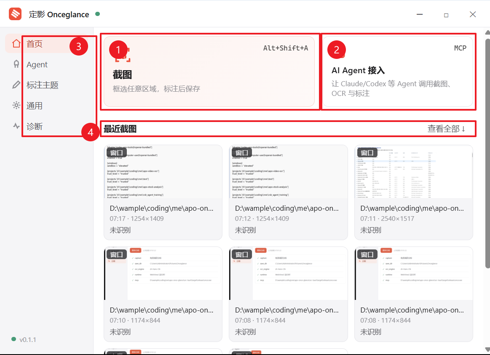
按一下 Alt+Shift+A，我们开始 02 第一张截图。
这一章带你完整走一遍 Alt+Shift+A
的截图流程：怎么选区、怎么取消、怎么把图交出去。读完你就能覆盖日常 90%
的截图场景。
屏幕会瞬间定格并整体变暗——这个变暗的画面叫「取景层」。别担心，屏幕没有真的卡住，它只是被拍了一张快照铺在最上层，你在上面框选的就是刚才那一瞬间的屏幕。
取景层是预驻留的：从按下热键到定格大约 40 毫秒，感觉就是「啪」一下。
定格后不用急着拖，先看看这三个帮你省事的东西：
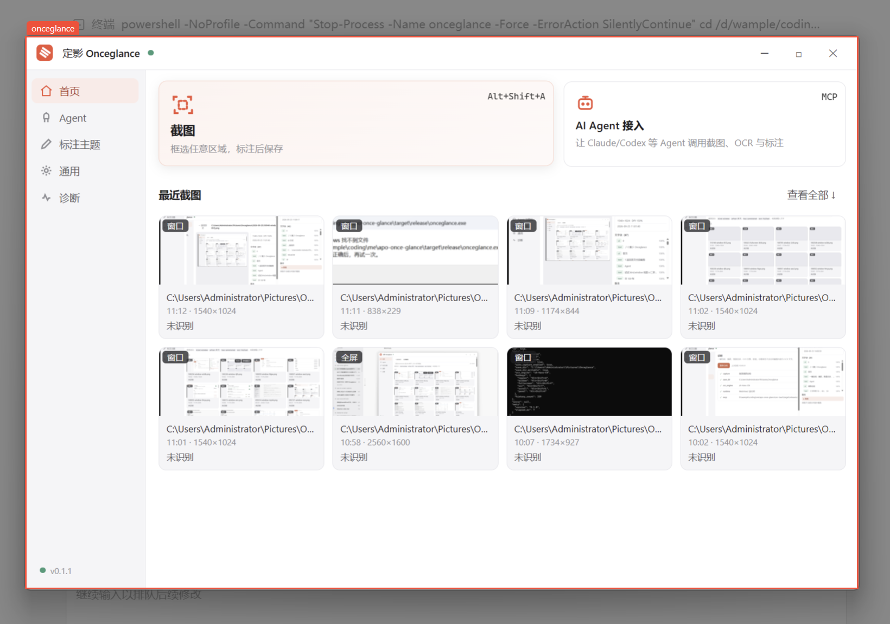
选完还能调整：拖四角与四边的白色手柄改大小，拖框内部整体挪位置。
按 Esc，或者点工具栏的
✕——定格画面消失，屏幕恢复，不留任何文件、不碰剪贴板。连续按
Esc 会先放弃当前选区，再彻底退出。
选好区域后，屏幕下方浮出一条工具栏：
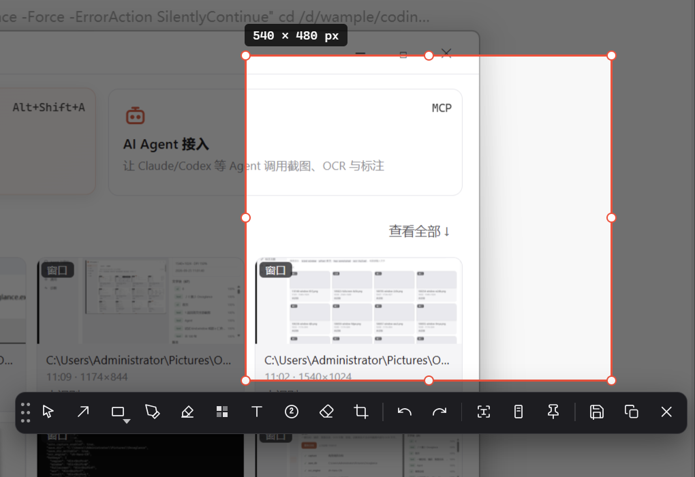
| 操作 | 按键/按钮 | 结果 |
|---|---|---|
| 复制 | Enter |
截图进剪贴板，去任何地方 Ctrl+V |
| 保存 | Ctrl+S |
存进默认目录（图片\Onceglance），不占剪贴板 |
| 另存为 | 💾 按钮 | 弹出对话框，自己选位置和文件名 |
| 贴图 | D |
截图变成钉在屏幕上的浮窗（05 章） |
| 取字 | 按钮 | 截图里的文字直接变文本进剪贴板（06 章） |
| 长截图 | 按钮 | 转入滚动截图模式（04 章） |
按 Enter 后取景层自动退出，去粘贴试试——一张 1254×1409
的截图就这样进了你的聊天框。
Alt+Shift+W：直接截取当前活动窗口，不用框；Alt+Shift+F：直接截取整个屏幕。多显示器也没问题，两个屏幕各按各的，像素 1:1。
光有图还不够，下一章 03 给截图加标注——让截图一眼说明问题。
截图的价值在于一眼说明问题。这一章用四个小任务带你上手全部画图工具，再教你怎么「改到满意为止」——定影的标注在保存前随时可以回头改，不是画完就定死。
框选完成后不用找菜单，工具栏就贴在选区下方：箭头、矩形、椭圆、画笔、荧光笔、马赛克、文字、序号、橡皮擦、裁剪，每个工具都有单键快捷键（鼠标悬停可见）。选中工具后，颜色、线宽等属性在工具栏下一行随手调。
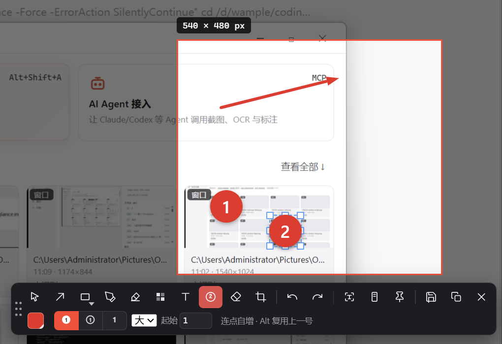
A（或点箭头图标）；Shift 再拖，可以锁定 45°
方向（水平/垂直/对角）。颜色不满意？在属性行的色板里点一个，画完的箭头选中后改色也来得及。
写教程、报 bug 时，序号比箭头更清楚操作顺序：
N
选序号工具——鼠标会变成「下一个序号」的幽灵预览；Alt
点击。序号的样式（实心圆/描边圆/纯数字）、起始编号、大小都在属性行调。
截图里有账号、金额、邮箱？两种遮法：
M 选马赛克工具；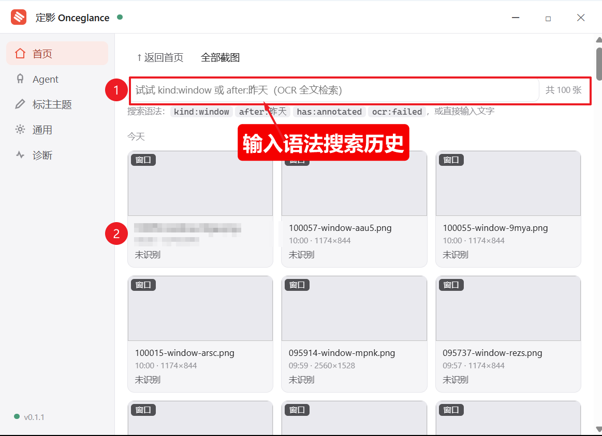
T，点选区里任意空白处，直接打字；定影的标注是「对象」：每一个箭头、每一块马赛克都能单独选中再改。
Ctrl+Z 撤销、Ctrl+Y 重做，最多 20
步——包括删除和属性修改。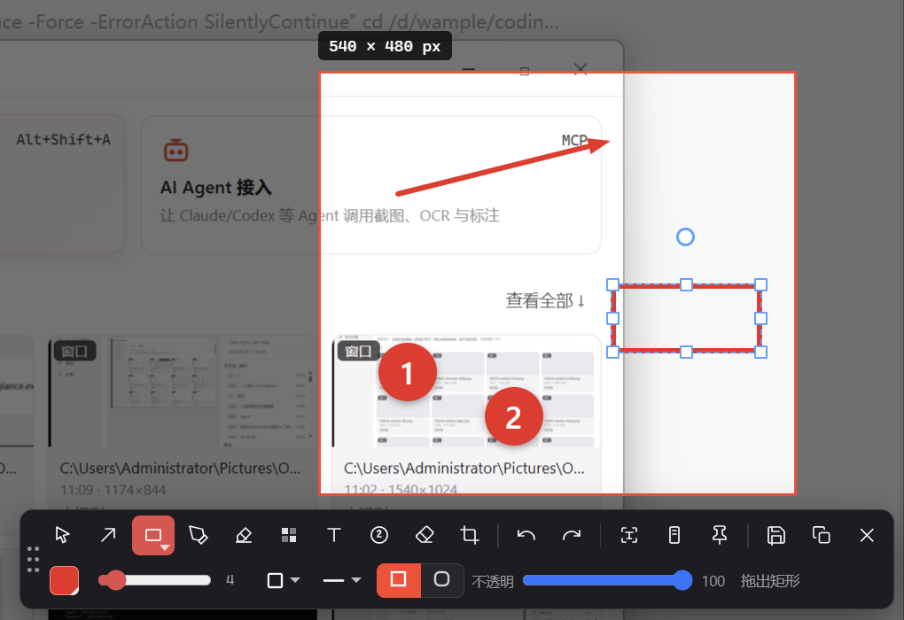
双击文字随时重新编辑；任何工具下单击文字都能直接改字——不用先切工具。
| 操作 | 结果 |
|---|---|
Enter |
成品图（标注已合成）进剪贴板 |
Ctrl+S |
成品存进默认目录 |
| 保存按钮 | 弹对话框选位置 |
带标注的截图会生成一张 -ann
结尾的成品图，原图永远原样保留——两张图都进历史，改崩了随时从原图重来。
一屏装不下的内容怎么办？04 长截图。
一屏装不下的聊天记录、要存档的长网页、滚不到头的配置列表——这一章教你把它们滚成一张完整的长图。
Alt+Shift+A
框选起始区域，点工具栏的长图按钮（或按 L）；Alt+Shift+L，框选后松手即开始采集。框选时不用精确框住「整个长页面」——框住开头一段就行，剩下的靠滚动。
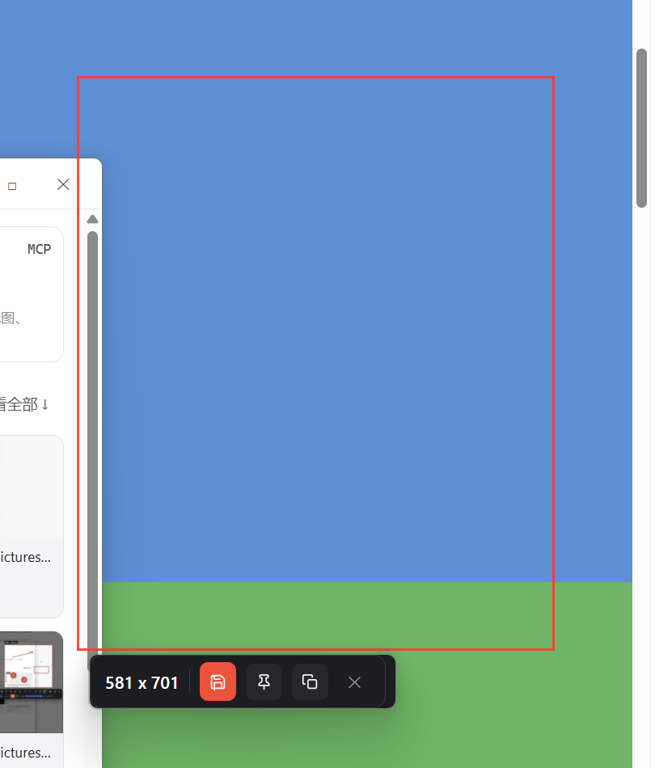
工具条长这样，四个按钮，一目了然：
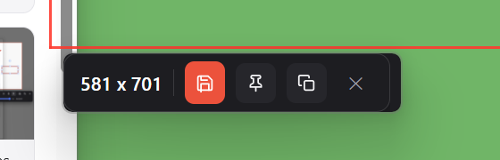
中途不想截了？Esc 取消，什么都不留。
接缝你不用管——相邻画面自动对齐拼接，出现可疑接缝时定影会自动取最优结果，一般不需要手动修。
长图存好了，想让它在屏幕上挂一整天？05 贴图。
贴图（Pin）= 把一张截图钉在屏幕最上层。对照着抄一段配置、边看参考图边做设计、贴一张二维码随时扫——凡是要「挂着看」的图，都适合贴出来。
截图框选完成后，按 D（或点工具栏的图钉图标 📌）：
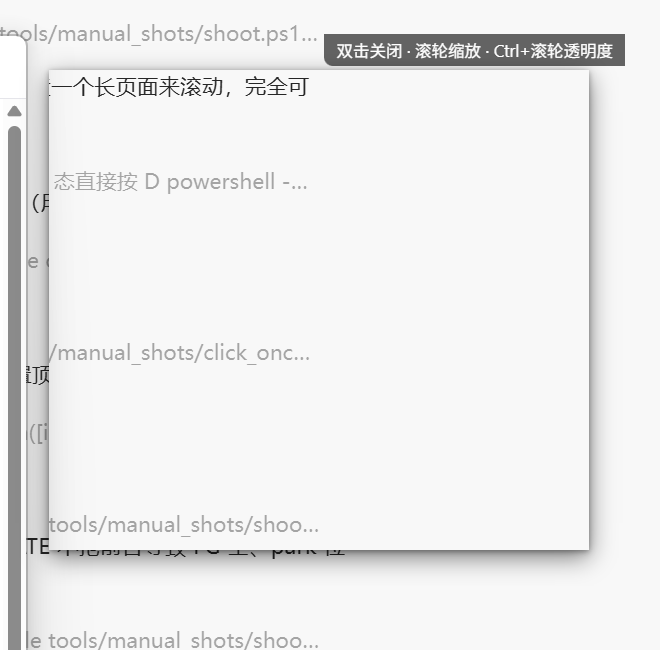
| 操作 | 方式 |
|---|---|
| 移动 | 按住拖动 |
| 缩放 | 滚轮 |
| 调透明度 | Ctrl+滚轮，十档，中央显示百分比 |
| 关闭 | 双击 |
透明度调到 50% 左右可以当「衬底」用——照着打字、照着画图，图在下文字在上互不干扰。
贴图不怕关软件：关掉定影、甚至重启电脑，贴图还在原地（重启后仍在，双击关闭才消失）。
Ctrl+滚轮
调成半透明；贴图会占屏幕，但截图都在 06 历史与取字 里等你——每张图自动入库，可搜索。
「上周那张截图去哪了？」——不用翻文件夹。定影把每张截图自动入库，写清了时间、来源、类型，还能按图片里的文字内容搜索。这一章讲怎么找图、怎么看图、怎么把屏幕上的字变成文本。
不需要你做任何事：截图、标注、长截图、贴图的底图，全部自动存进
图片\Onceglance\<日期>\，同时在主面板可查。
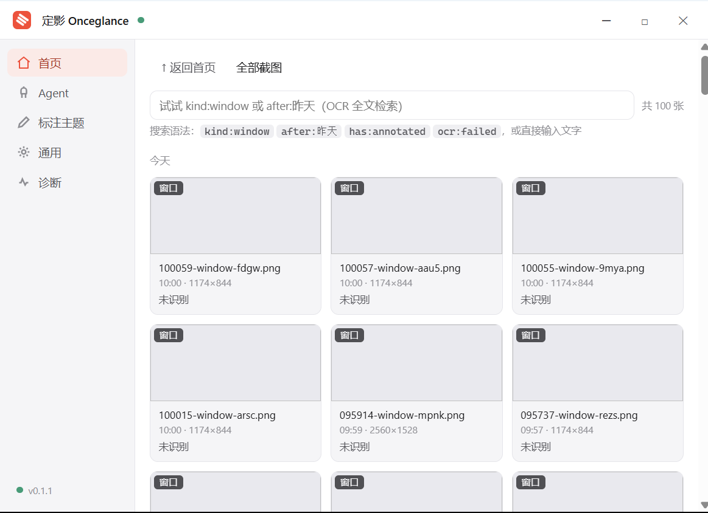
历史页顶部是搜索框，支持自然输入和精确语法：
| 你想找 | 搜这个 |
|---|---|
| 窗口截图 | kind:window |
| 带标注的图 | has:annotated |
| 昨天之后的 | after:昨天（也支持 after:2026-09-01） |
| 图片里写过「发票」的 | ocr:发票 |
| 取字失败的图 | ocr:failed |
语法可以组合：kind:window after:昨天 =
昨天以来的窗口截图。
点开任意卡片进详情页：1:1 原图显示（不压缩，文字线条和截图时一样锐利），右上角可切「适应窗口」，滚轮缩放。
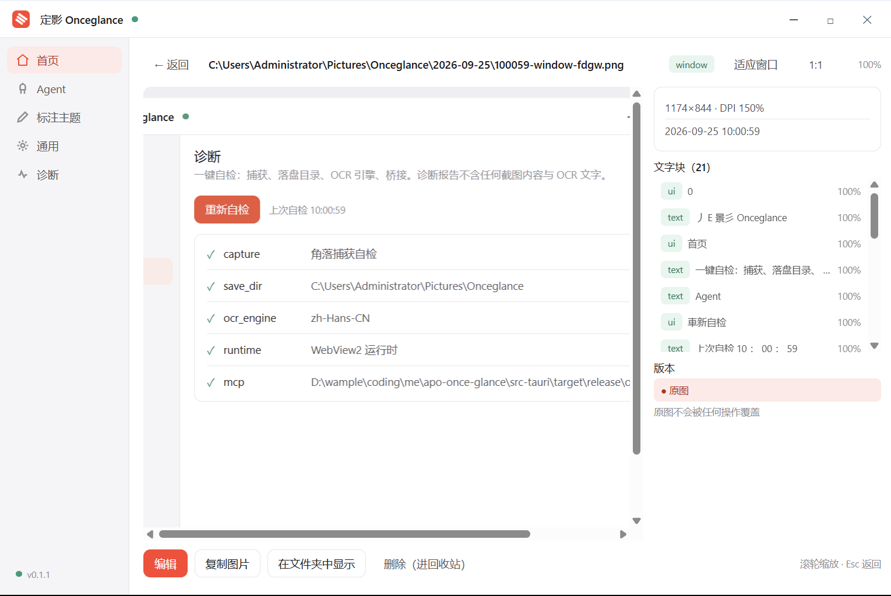
详情页最有价值的是版本链：原图和它的衍生图（标注版
-ann、裁剪版）自动关联成一条线——原图永远不可变，改崩了随时从源头重来。
卡片的三个常用动作：复制（进剪贴板）、打开（系统看图器）、编辑（进标注编辑器继续改）。
两种用法：
Alt+Shift+T——框选一块区域，区域里的文字直接进剪贴板；OCR 由 Windows
自带引擎完成，全程离线。取字结果同时保存为
.ocr.json，记录每个文字块的内容和坐标——这也是 Agent
能「看懂屏幕」的基础（08 章）。
找不到想搜的词？先确认那张图拍清晰了——OCR 搜的是图里识别出的文字，糊图搜不到。
界面上的开关都是什么意思？07 主面板与设置。
按 Alt+Shift+H
打开主面板。左侧五个页面，这一页讲清「每个页面管什么、哪些开关值得你动」。
| 页面 | 管什么 | 什么时候来 |
|---|---|---|
| 首页 | 开始截图、最近截图、查看全部 | 日常 |
| Agent | AI 的权限、接入、隐私防线 | 接 AI 或担心隐私时 |
| 标注主题 | 你的标注默认样式 | 想换标注风格时 |
| 通用 | 热键、开机自启、保存位置 | 刚装好时过一遍 |
| 诊断 | 一键体检 | 出问题时 |
两张动作卡 + 最近截图。点「截图」卡 = 按
Alt+Shift+A；点「AI Agent 接入」卡直达 Agent 页。
这一页是你对 AI 的全部控制权，从上到下三道防线：
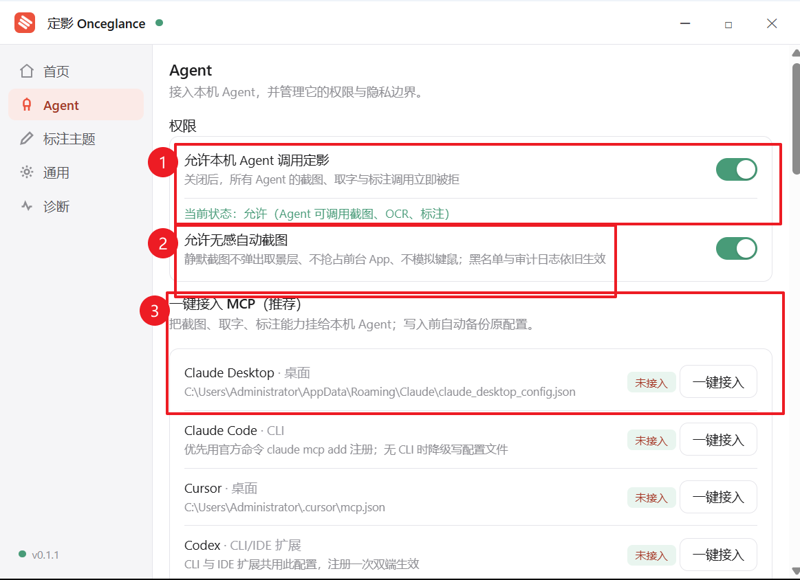
往下还有两样保护你的东西：
接入的完整步骤在 08 接入 AI Agent。
你在标注时调的颜色、线宽、字体、序号样式……都会自动记住（「即改即存」），下一次打开就是你的风格，不用每次重调。
这一页是只读的全量清单——显示当前所有默认值，想改去标注编辑器里改。它还有个特殊意义：AI 的标注会继承这里的主题。你把箭头调成红色粗线、序号调成描边圆，AI 生成的教程图就是这个风格（完整参数表见 附录 D）。
想全部重来？页内一键「恢复默认值」。
图片\Onceglance，可改；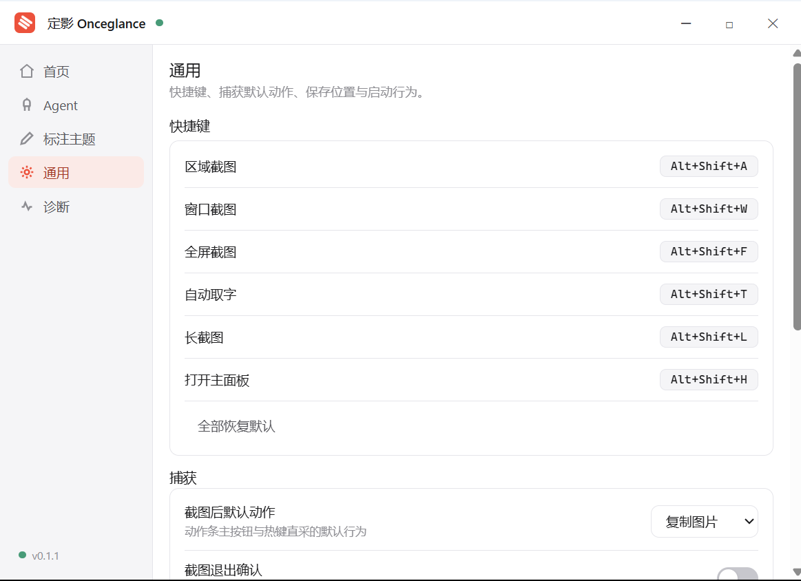
点「重新自检」，七项全绿就是健康状态：捕获、落盘目录、OCR 引擎、剪贴板、托盘、桥接管道、历史库。哪项红了，按提示处理，或带着截图来交流群问。
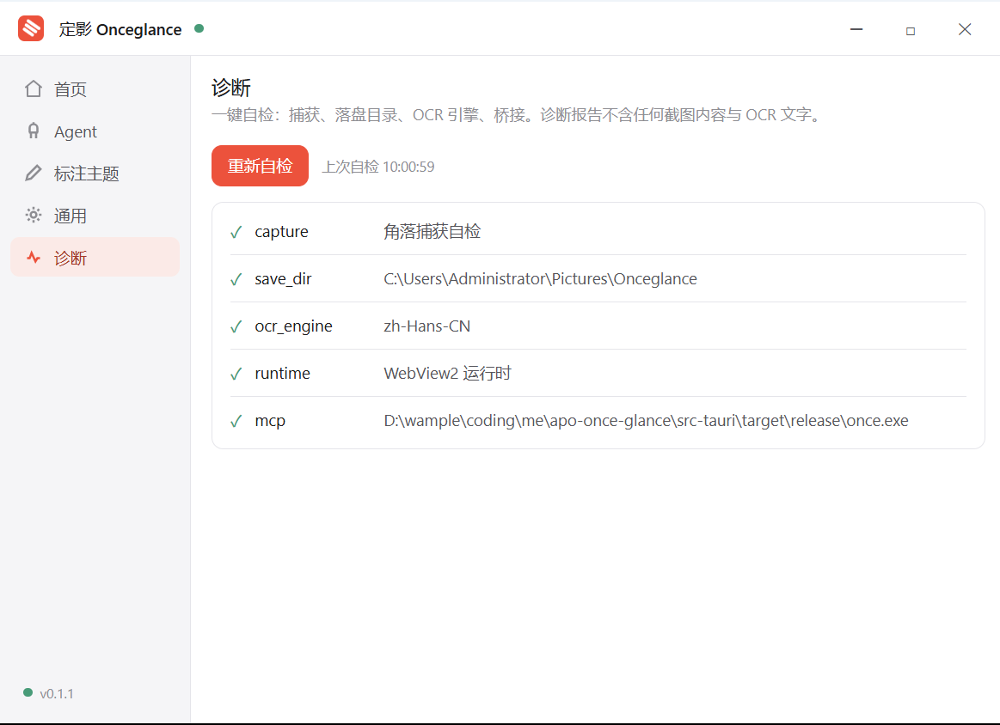
设置就绪，来点真正省事的：08 接入 AI Agent。
你每天对 AI 说「看一下这个报错」「帮我把这个界面整理成文档」——可 AI 看不见你的屏幕。这一章解决这个问题：让 AI 通过定影截屏、取字、标注，从此「看图办事」一句话的事。
以 WorkBuddy 为主线（用户最多、接入最简单），其他 Agent 一张速查表带过。
另外，客户端没开 AI 也能干活——CLI 与 GUI 共享同一内核，截图、取字、标注、历史检索都不依赖客户端运行，只有交互式框选和长截图需要你在场。
WorkBuddy 走的是「复制 → 粘贴 → 验证」的最简路径：
第一步：复制接入配置
打开定影主面板（Alt+Shift+H）→ Agent 页 → 在「一键接入
MCP」区域找到 WorkBuddy（或在接口速查里复制通用 MCP 配置），点复制。
第二步：到 WorkBuddy 里粘贴
打开 WorkBuddy 的设置 → MCP / 工具接入界面 → 把配置粘贴进去，保存。
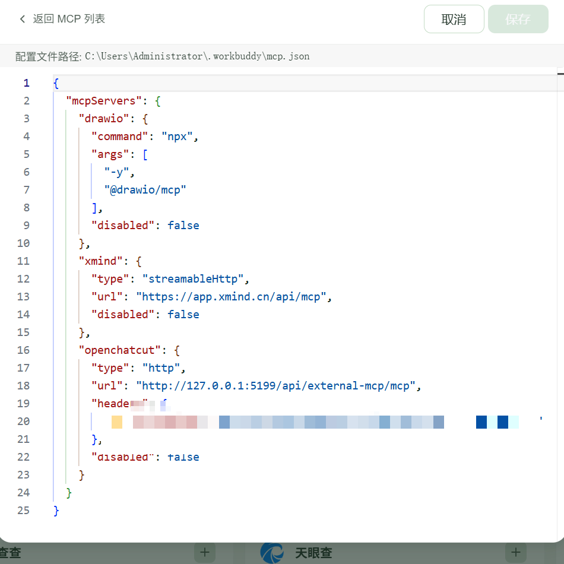
第三步：验证
在 WorkBuddy 的对话里说一句：
帮我截一张当前屏幕的图WorkBuddy 会调用定影完成截图并把图片路径告诉你——能看到返回的图片文件，就是接通了。
主面板 Agent 页的「一键接入 MCP」列表覆盖常见客户端：Claude Desktop、Claude Code、Cursor、Codex、ZCode 等——对号点「一键接入」，自动写入配置（写入前自动备份你的原配置，随时可回退；不想要了点「移除」干净卸载）。
不依赖 MCP 的 Agent（或脚本）直接用命令行：
curl -fsSL --retry 3 https://github.com/wample0105/apo-once-glance/releases/latest/download/install.sh | bash装完验证：
once status --json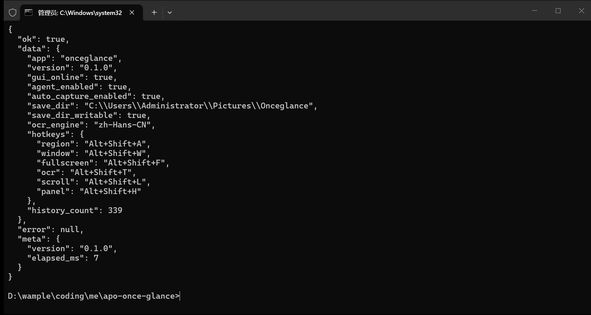
"ok": true、gui_online、agent_enabled
都是 true，就绪。之后 Agent 就可以执行完整链路：
once capture window --json # 截前台窗口
once ocr last --json # 对刚才的截图取字
once annotate last --script ops.json --out out.png # 按指令标注全部命令与退出码见 附录 B。
| 客户端 | 接入方式 | 在哪操作 |
|---|---|---|
| WorkBuddy | 复制配置粘贴 | 定影 Agent 页复制 → WorkBuddy 设置粘贴 |
| Claude Desktop | 一键接入 | 定影 Agent 页 → 点「一键接入」 |
| Claude Code | 一键接入 | 同上（优先官方 claude mcp add） |
| Cursor | 一键接入 | 同上 |
| Codex | 一键接入 | 同上 |
| ZCode | 一键接入 | 同上 |
| 其他 MCP 客户端 | 手动配置 | 把 once mcp 命令加进你的 MCP 配置 |
AI 已经能替你截图取字了，最后一章让它替你写教程：09 让 AI 替你写教程。
本章功能需要 v0.1.2 及以上版本的 CLI/Skill（
once status --json的version字段可查）。
上一章 AI 已经会截图取字了，这一章再往前一步：让它把操作过程写成图文教程。你只要说「帮我把刚才的操作写成教程」，AI 就会自动完成截图、取字、标注、成稿——就像你现在读的这套官方教程，配图全部由这条产线自己产出。
AI 写教程靠的是定影的三个命令串成链：
once capture window --json # ① 拍下每一步的画面
once ocr last --json # ② 读出画面文字和坐标
once annotate last --script ops.json --out out.png # ③ 按坐标画标注关键在 ②：取字结果自带每个文字块的坐标框，AI 据此精确画出「箭头指向哪个按钮、序号标在哪一步」——不需要它真的「看懂」图片。
curl -fsSL --retry 3 https://github.com/wample0105/apo-once-glance/releases/latest/download/install.sh | bash这条命令会同时装好 once 命令行和
onceglance-tutorial Skill（教程写作工作流）到通用 Agent
Skills 目录。装完在 Agent 里说：
帮我确认 onceglance-tutorial skill 已安装对装好 Skill 的 Agent 说：
我马上要在系统设置里关闭 HDR，请跟着我的操作写一篇带标注图文的教程然后你正常操作，Agent 会：
Alt+Shift+A
后它取最近一张）；产出的教程直接可用：发群、发文档、贴博客都行。
AI 画标注不自带样式——颜色、线宽、序号样式全部继承你在定影里调好的 标注主题。你平时怎么标，AI 就怎么标，产出的图和你的手笔一致。
想固定某种风格批量出图？在标注主题页把默认值调好即可，不用在指令里写死任何颜色参数。
到 附录 查阅快捷键总表、CLI/MCP 速查、常见问题——按需回来翻。
参考区：按需查阅。快捷键、命令、参数的口径与 README 门面同源。
| 快捷键 | 功能 |
|---|---|
Alt+Shift+A |
区域截图 |
Alt+Shift+W |
窗口截图 |
Alt+Shift+F |
全屏截图 |
Alt+Shift+T |
自动取字 |
Alt+Shift+L |
长截图 |
Alt+Shift+H |
打开主面板 |
热键冲突可在主面板「通用页」改键。
| 快捷键 | 功能 |
|---|---|
Enter |
复制到剪贴板（有标注时合成成品） |
Ctrl+C |
同复制 |
Ctrl+S |
保存到默认目录 |
D |
贴图（选区原位贴出） |
L |
转入长截图模式 |
Esc |
取消（先弃选区，再彻底退出；有标注时弹确认，可记住选择） |
Tab |
切换自动识别的窗口候选 |
| 右键 | 输出选项菜单（无选区时=退出） |
| 键 | 工具 | 键 | 工具 |
|---|---|---|---|
V |
选择 | M |
马赛克/模糊 |
A |
箭头 | T |
文字 |
R |
矩形 | N |
序号 |
O |
椭圆 | E |
橡皮擦 |
P |
画笔 | C |
裁剪 |
H |
荧光笔 |
| 快捷键 | 功能 |
|---|---|
Ctrl+Z / Ctrl+Y |
撤销 / 重做（20 步） |
Delete |
删除选中标注 |
| 方向键 | 微调选中标注（Shift+方向键 = 10px） |
Shift（拖箭头时） |
锁定 45° 方向 |
Alt+点击（序号工具） |
复用上一个序号不递增 |
| 双击文字 | 重新编辑文字内容 |
全部命令输出统一 JSON
envelope：{ok, data, error, meta}，判断成功只看
ok 与退出码。
| 命令 | 功能 |
|---|---|
once status [--json] |
实例/落盘/OCR/热键状态 |
once capture window --json |
截前台窗口 |
once capture fullscreen --json |
截全屏 |
once capture region --json |
交互式框选（需 GUI；无 GUI 时用 --x --y --w --h
物理像素直采） |
once ocr last --json |
对最近截图取字（也可传图片路径） |
once annotate last --script s.json --out out.png |
按脚本标注 |
once history --query "kind:window after:昨天" |
历史检索 |
once doctor |
环境自检 |
once mcp |
启动 stdio MCP Server |
| 码 | 含义 | 说明 |
|---|---|---|
0 |
成功 | |
1 |
参数错误 | envelope.error 里有逐条明细 |
2 |
捕获失败 | 锁屏/驱动/杀软拦截 |
3 |
OCR 失败 | 已自动重试 1 次 |
4 |
读写失败 | 文件/剪贴板 |
5 |
权限被拒 | 用户关闭了 Agent 总开关 |
6 |
黑名单命中 | 无「本次放行」，不要重试 |
{
"unit": "px",
"operations": [
{ "type": "rect", "at": [520, 24], "size": [330, 40], "style": "outline" },
{ "type": "arrow", "from": [200, 100], "to": [535, 45] },
{ "type": "step_number", "at": [180, 90], "label": 1 },
{ "type": "text", "at": [620, 20], "text": "点击导出报表" },
{ "type": "mosaic", "at": [2200, 20], "size": [150, 50], "mode": "pixelate" }
]
}unit:"px" 物理像素；unit:"rel" 为
0–1 相对坐标（无精确像素时推荐）；arrow / rect / ellipse / text / step_number / highlight / pen / mosaic(pixelate|blur) / crop。MCP Server 由 once mcp 启动（stdio），共 6 个工具：
| 工具 | 功能 |
|---|---|
capture_screen |
截屏（窗口/全屏/区域） |
scroll_capture |
长截图（滚动采集） |
ocr_image |
对指定图片（或最近截图）取字 |
annotate_image |
按标注脚本生成衍生图 |
list_history |
检索历史（支持 kind:/after:/has:/ocr: 语法） |
doctor |
环境自检 |
以下全部参数在主面板「标注主题」页只读展示、在标注编辑器里即改即存；AI 的标注自动继承，未显式传参时按此默认值渲染。
| 组 | 参数 | 说明 |
|---|---|---|
| 通用 | 主题色、默认线宽 | 未单独记忆的工具回落主题色 |
| 每工具颜色 | arrow / pen / marker / rect / ellipse / text / num | 每个工具独立记忆 |
| 箭头 | 头型（终点/双向/起点/无）、线型（实线/虚线/点线） | |
| 形状 | 填充（描边/填充/描边+填充）、圆角、虚线、不透明度 | 矩形与椭圆共用 |
| 文字 | 字体、字号、行距、粗体/斜体/下划线/阴影、对齐、背景色、背景透明度、背景圆角、描边 | 描边自动取反色 |
| 序号 | 样式（实心/描边/纯数字）、直径、起始编号 | |
| 马赛克 | 模式（马赛克/模糊）、强度 | |
| 荧光笔 | 不透明度 | |
| 整图输出 | 阴影（模糊半径/颜色）、边框（宽度/颜色） | 衍生图整图特效 |
截图整体发白、像曝光过度？ 系统开启了 HDR。HDR 下 Windows 以高亮度范围合成桌面，传统截图接口拿到的是亮度映射后的降维帧。解决：设置 → 系统 → 屏幕 → HDR → 关闭「使用 HDR」。
客户端没打开，Agent 能调用吗？ 能。CLI/MCP 与 GUI 共享同一内核，截图/取字/标注/历史检索均不依赖客户端运行；仅交互式框选与长截图需要 GUI。
热键按了没反应？
多半是被其他软件占了（部分工具默认占用相同组合键）。主面板「通用页」给冲突的热键改键即可。另注意：后台驻留的同类截图软件可能注册了相同全局热键（如
F3），窗口内按键抢不过系统级全局热键，建议关闭或改键对方。
长截图拼不完整 / 丢段？ 慢速匀速滚动成功率最高；两次采样之间滚过一屏以上必丢段（物理边界）。滚到底部停一秒再点完成。
衍生图会覆盖原图吗？ 永远不会。标注/裁剪产物按
-ann 命名并记录 lineage，删除只进回收站。
一键接入后 Agent 没反应？ 重启该客户端让它重读 MCP 配置；同一家族的桌面端与 CLI 端配置互不相通，确认接的是你正在用的那个端；还不行去「诊断页」跑自检，看桥接管道一项。
Agent 调用被拒（退出码 5）？ 主面板 Agent 页的权限总开关被关了，打开即恢复。
怎么卸载？ 客户端：托盘退出后删除程序目录（图片在
图片\Onceglance，按需保留）；CLI：删除
~/.onceglance 目录；MCP 配置：在 Agent
页对已接入客户端点「移除」。